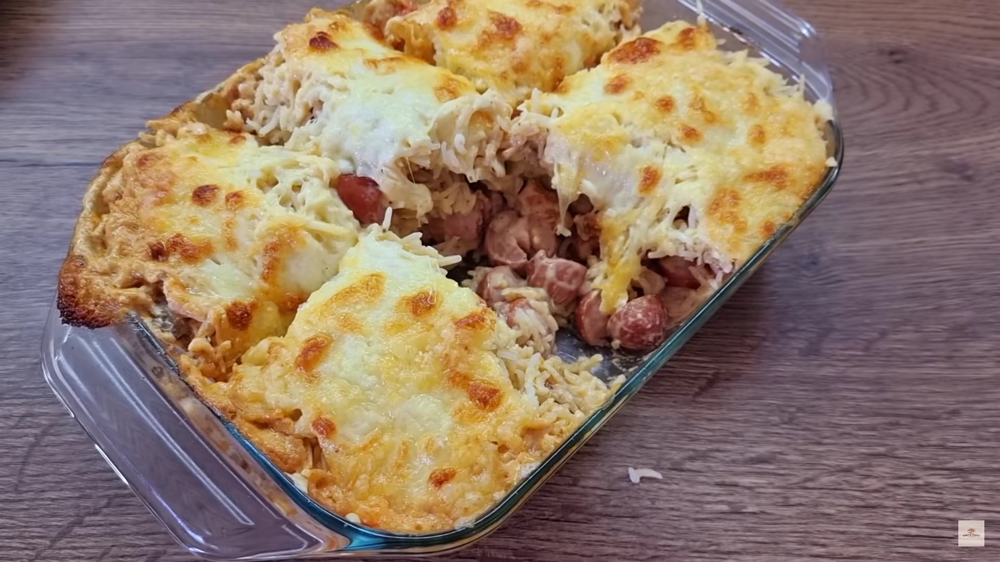

Salchichas con queso y champiñones

La receta con salchicha para el almuerzo o la cena que te impresionará por su sabor y facilidad de preparación. Una receta rápida, te gustará mucho por su aroma y sabor. Esta es una receta de salchicha deliciosa que no requiere muchos ingredientes costosos y que agradará a toda la familia.
La Receta
Ingredientes
| Cant | Ingrediente |
|---|---|
| 8 | salchichas |
| 1 | cebolla |
| 1 | zanahoria |
| 100 g | de champiñones |
| 150 g | de arroz |
| 300 ml | de nata |
| Al gusto | sal, pimienta, pimentón, albahaca |
| 200 g | de queso |
| 100 g | de mozzarella |
Pasos de preparación
- Picar 8 salchichas.
- Picar 1 cebolla y cocinarla en una sartén a fuego lento.
- Picar 1 zanahoria y cocinarla junto a la cebolla en el mismo sartén.
- Picar 100 g de champiñones y cocinarlos a fuego medio durante 10 minutos junto con la cebolla y la zanahoria.
- Cocinar 150 g de arroz.
- En la sartén de la cebolla, vierta las salchichas, 300 ml de nata, sal, pimienta, pimentón, albahaca y cocine por 15 minutos a fuego lento.
- Rallar 200 g de queso y picar 100 g de mozzarella.
- En un recipiente de vidrio o refractaria, vierta la mitad del arroz sobre la base formando una capa uniforme.
- Vierta el contenido de la sartén sobre la capa de arroz de manera uniforme.
- Vierta el arroz restante sobre la capa superior.
- Colocar el queso rallado y picado sobre la capa de arroz superior.
- Hornear durante 20 minutos a 200 ° C.
- ¡Servir y a disfrutar!
¡Buen apetito!
Por si los pasos de preparación no han quedado claros, aquí puedes ver el video guía de la preparación.
Créditos: @schnelllecker
caja
caja
caja
caja
caja
caja
caja
caja
caja